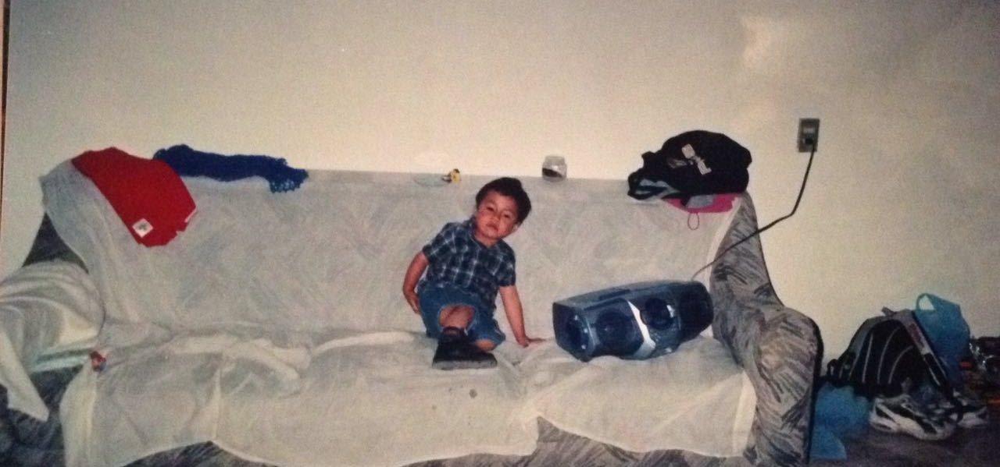
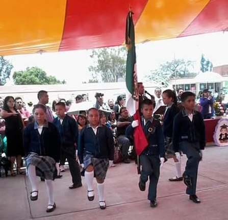
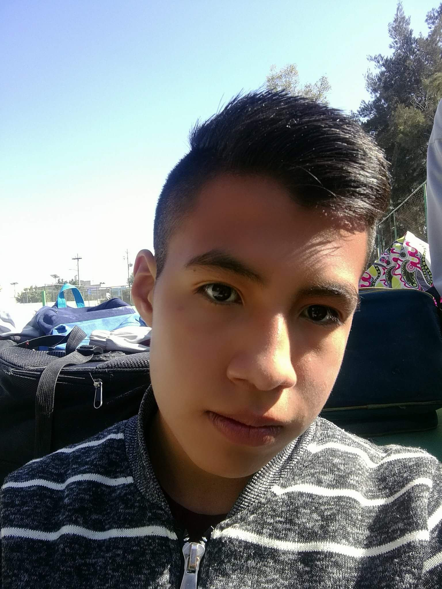

Mi nombre es Franco Ulises Ojeda Ojeda, nací el 29 de mayo del 2003 en Xalostoc asi que tengo 17 años :D, mido 1.72 m y peso 56 kg; mis comidas favoritas
son la pizza y los tacos; en la actualidad no practico deportes, pero llege a practicar Kick Boxing y Karate Do y tengo ganas de entrenar Muay Thai, no soy muy
sociable pero tampoco soy de pocos amigos, soy recurse asi que llevo dos años en Voca 3.
De pequeño vivía en Coacalco, ahí curse 3 años en el Kinder "Emilio Chuayffet" y 3 años en la primaria "Carmen
Serdan", en mi calle siempre salía en las noches y los sabados a jugar con mis amiguitos, no tengo fotos con ellos poruqe estabamos chicos para tener un telefono
jajaja; por x problemas nos tuvimos que mudar de ahí.
Como no teniamos casa por Ecatepec un tiempo estuvimos viviendo con una tia, siento que es como mi segunda mamá jajaja, despues rentamos un cuarto cerca de la mi
primaria "Miguel Hidalgo"; al principio me costo trabajo adaptarme a mi "nueva vida" ya que era una zona completamente diferente, y tenía que empezar desde 0 con
otros niños en otra escuela, para mi suerte unos niños se me acercaron para preguntarme si queria ser su amigo, hasta la fecha siguen siendo mis amiguitos; cabe
recalcar que en esta etapa mis calificaciones eran excelentes jajaja, asi que me quede como abanderado en la escolta.
Acabando la primaria me inscribí en la secundaria "Sentimientos de la Nación Mexicana", algo que olvide mencionar es que me gusta mucho el el desmadre con mis amigos, cosa
que me afectó mucho en primer año, ya que mis calificaciones bajaron hasta los 6 :(, obviamente mis papás se molestaban mucho conmigo; ya para la mitad del segundo año
"me calló el 20" y empeze a trabajar más, hasta que cada bimestre sacaba reconocimiento :D, pero no me quede en la escolta, cosa que agradezco mucho jajaja.
Tiempo despues hice COMIPEMS y quede en mi primera opción <3, pero me pasó lo mismo que en secundaria, no supe controlar mi desmadre y por eso termine siendo recurse,
sin embargo no me arrepiento de nada, ya que así pase mucho tiempo con amigos que desertaron y otros que tambien son recurse jajaja.
Para mas información da click aquí.